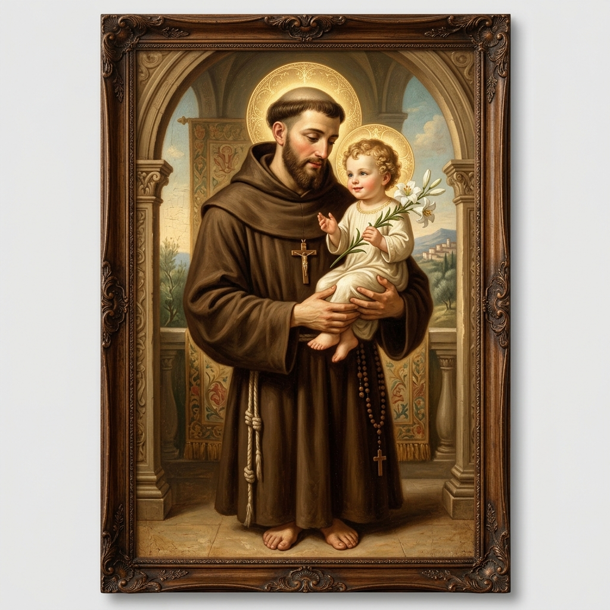

San Antonio de Padua
El "Martillo de los Herejes" y Doctor Evangélico, cuya vida misionera y milagros lo convirtieron en uno de los santos más queridos de la cristiandad.
Orígenes en Lisboa y Vocación
Nacido en Lisboa, Portugal (c. 1195) con el nombre de Fernando Martins de Bulhões, pertenecía a una familia de la nobleza portuguesa. A los 15 años ingresó a la Orden de los Canónigos Regulares de San Agustín, donde recibió una formación intelectual y bíblica de primer nivel en Coímbra, convirtiéndose en un profundo conocedor de las Sagradas Escrituras.
En 1220, su vida dio un giro radical. Coímbra recibió los restos de los primeros cinco mártires franciscanos asesinados en Marruecos mientras predicaban el Evangelio. Conmovido por su heroísmo y deseando el martirio él mismo, Fernando obtuvo la autorización para dejar a los agustinos y unirse a la naciente **Orden de los Frailes Menores** de San Francisco de Asís, adoptando el humilde nombre de **Antonio** en honor a San Antonio Abad.
El Predicador y Teólogo de la Orden
Antonio partió en misión a Marruecos, pero una grave enfermedad y una tormenta marítima lo desviaron a las costas de Sicilia. En 1221 asistió en Asís al célebre Capítulo de las Esteras, donde conoció personalmente a San Francisco de Asís. Antonio ocultaba su profunda erudición teológica tras un velo de absoluta sencillez y tareas domésticas en los eremitorios.
Su talento fue descubierto providencialmente en una ordenación sacerdotal en Forlì, cuando a falta de un predicador preparado, se le pidió improvisar un sermón. Su alocución, cargada de una unción divina, elocuencia y una increíble memoria bíblica, maravilló a todos. San Francisco, al enterarse, lo nombró primer teólogo oficial de la orden, encomendándole la enseñanza de la teología a los frailes, con la famosa advertencia de *"no apagar el espíritu de oración y devoción"*. Antonio recorrió el norte de Italia y el sur de Francia predicando con fervor, combatiendo las herejías de la época y defendiendo a los pobres frente a los usureros y déspotas.
Tránsito y Devoción Popular
Desgastado por su ardua labor misionera y por la hidropesía, Antonio se retiró al convento de Camposampiero y posteriormente a Padua. Falleció el 13 de junio de 1231 a la temprana edad de 35 años, susurrando: *"Veo a mi Señor"*. Fue canonizado por el Papa Gregorio IX apenas 352 días después de su fallecimiento debido a los incontables milagros y curaciones que se sucedieron junto a su sepulcro en Padua.
La tradición popular lo representa sosteniendo al Niño Jesús en sus brazos (basado en una visión mística presenciada por el conde de Camposampiero) y un lirio que simboliza su pureza espiritual. En 1946, el Papa Pío XII lo proclamó oficialmente **Doctor de la Iglesia**, bajo el título de *Doctor Evangélico*.

| Nacimiento | c. 1195, Lisboa, Portugal |
| Fallecimiento | 13 de junio de 1231, Padua, Italia (35 años) |
| Festividad | 13 de junio |
| Proclamación | Doctor de la Iglesia (1946) |
| Patronazgos | Objetos perdidos, viajeros, pobres, albañiles |
Oración de Intercesión
"Oh admirable San Antonio, glorioso por tus milagros y por la ternura con la que sostuviste al divino Niño Jesús. Obtén de su bondad la gracia que ardientemente te pido. Tú que eres tan consolador con los necesitados, guíanos por el camino del amor, la caridad fraterna y el fiel seguimiento de la palabra de Dios. Amén."